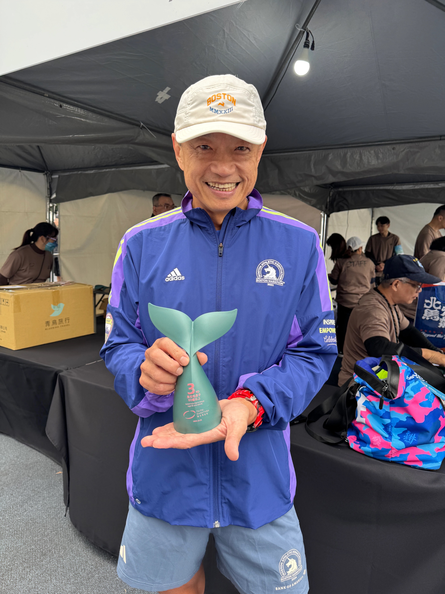
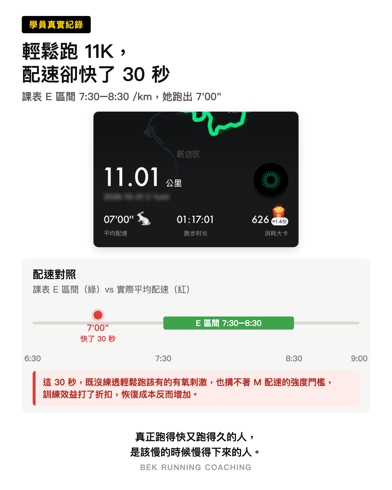

雪梨馬拉松系列 第一次雪梨馬就上手 Threads 發布 2026-11-05 第一次雪梨馬？9 個月備賽時間軸一次看懂：先打底、堆長距離、練坡練補給、減量出發。中籤只是門票，慢慢來就對了。 #雪梨馬拉松#初馬 閱讀全文 →
 跑步知識 Age Grading 年齡分級：你「年輕的時候」能跑多快 Threads 發布 2026-10-24 跑步的公平尺：把成績乘上年齡因子換算成 25-29 歲等效時間，就知道你「年輕的時候」能跑多快。58 歲 3:03:09 → 2:32:09、AG 79.3% 區域級；附分級表與官網試算器。 #AgeGrading#年齡分級 閱讀全文 →  跑步知識 輕鬆跑這麼慢，真的有用嗎？ Threads 發布 2026-11-02 輕鬆跑這麼慢，真的有用嗎？練得慢，身體才能以有氧為主力長出能力；該慢的時候慢得下來，才是跑得久的關鍵。 #輕鬆跑#E跑 閱讀全文 →
 跑步知識 Age Grading 年齡分級：你「年輕的時候」能跑多快 Threads 發布 2026-10-24 跑步的公平尺：把成績乘上年齡因子換算成 25-29 歲等效時間，就知道你「年輕的時候」能跑多快。58 歲 3:03:09 → 2:32:09、AG 79.3% 區域級；附分級表與官網試算器。 #AgeGrading#年齡分級 閱讀全文 →
 跑步知識 輕鬆跑這麼慢，真的有用嗎？ Threads 發布 2026-11-02 輕鬆跑這麼慢，真的有用嗎？練得慢，身體才能以有氧為主力長出能力；該慢的時候慢得下來，才是跑得久的關鍵。 #輕鬆跑#E跑 閱讀全文 →